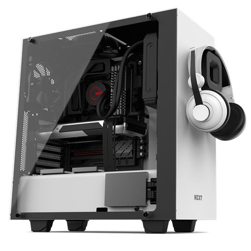
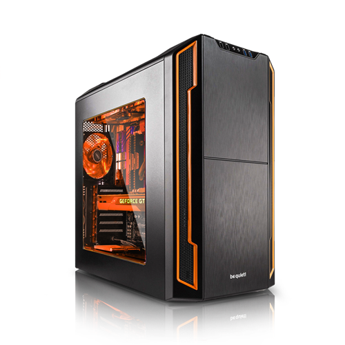
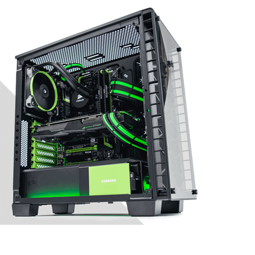

Our Portfolio
NZXT PC
On this PC we focused on raw performance and comfort with additions like headset hanger on the case itself.
This PC sports the powerful RTX 2080 and i5 14400k which are a good combo for 1080p to 1440p gaming and productivity.
beQuiet! PC
This PC focused on, well, being quiet.
Using all beQuiet! parts we could find like Silent Wing 3 fans and the Silent Base 701 we achived a near silent PC experience.
Corsair PC
This Corsair themed PC was the most powerful PC's that we ever built while being aestetic at the same time.
Sporting the ROG edition RTX 4090 and Ryzen 7 7800X3D it is the absolute pinicle of performance we can achive at this point in time.